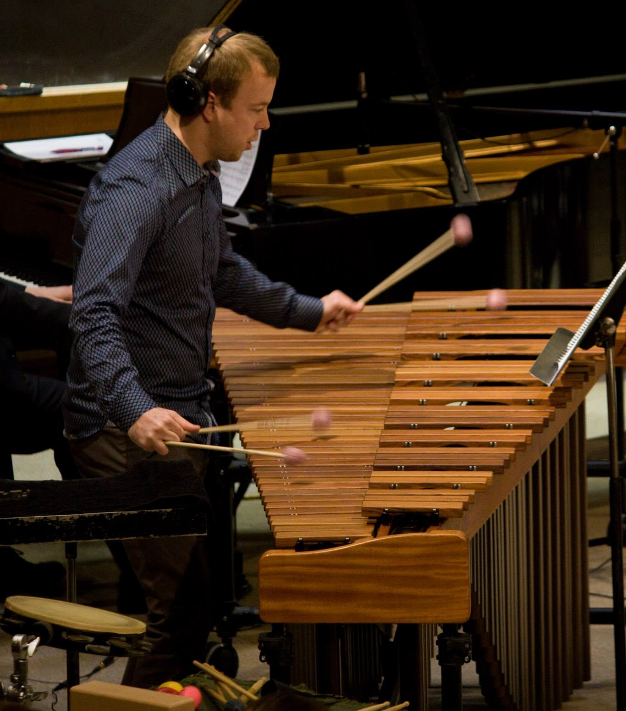
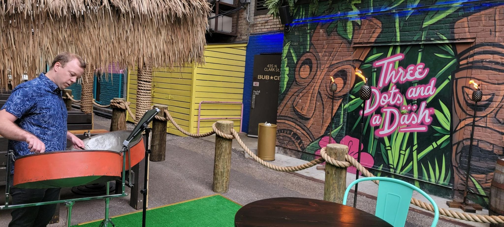

Jordan Kamps is
A chicago based percussionist and educator
Jordan currently teaches Percussion Ensemble, American Popular Music, Percussion Methods, and Applied Percussion at the University of Illinois at Chicago. In January 2025 Jordan took his percussion ensemble to perform at the Illinois Music Educators Conference in Peoria, IL. Jordan has received the Jim Chapin Award for percussion educators, the College of Architecture, Design, and the Arts Dean's Professional Development prize, and in 2025 received a course release through the Non-Tenure Track Professional Development Pilot Program to study steel pan in Trinidad.

Outside the university, Jordan has taught marching band and other ensembles in Chicago and throughout Wisconsin. He founded and taught the CPS All City percussion ensemble and currently teaches the Waukesha West High School Marching Band which, for the last 3 years, has received Best Percussion at the Wisconsin State Marching Competition. As a performer, Jordan has performed with such varying groups as the Extra Crispy Brass Band, Milwaukee Bucks NBA Drumline, and Chicago Arts Orchestra, and as a member of the backing orchestra for parts of the international tours of Evanescence, Celtic Thunder, Hansen, Streetlight Manifesto, Lindsey Sterling, and Yandel. Recently, Jordan performed the last 5 sold out shows of the Southern California leg of the World Ballet Company’s production of Swan Lake. In March 2025, Jordan traveled to Trinidad and performed at the 2025 Large Band Panorama Finals with Phase II Pan Groove on their arrangement of "Pan and Soca" by Dr. Len "Boogise" Sharpe
Jordan holds a Bachelors of Music in Percussion Performance from the University of Wisconsin – Whitewater and a Masters of Music in Percussion Performance from the University of Wisconsin – Milwaukee. Jordan currently performs with Ensemble Prime, a mixed chamber new music ensemble in Chicago; the Four Star Brass Band, a New Orleans style brass band in Chicago; and Callaloo, a Caribbean jazz world fusion band, as well as several other solo and pickup engagements.
While being an active performer, Jordan stays connected to new works for percussion. He has been active in several commissions and premieres of new works for both percussion and chamber music including pieces by Ivan Trevino, Marc Mellits, James Romig, Matt Moore and Jacob TV. Check out projects for what Jordan is up to.